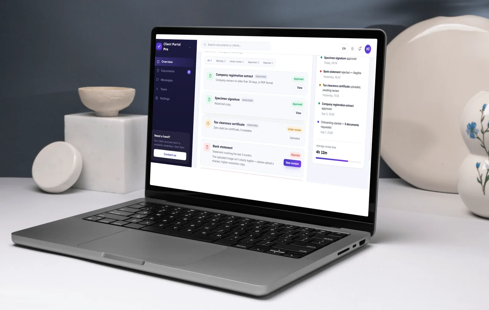

Full-stack web app
Client Portal
A portal where a business asks clients for documents, clients upload them, and staff review each file.
- My roleDesign and development
- TypeBusiness software demo
- StackPython, Django, SQLite, Render



The problem
Accountants, law firms and estate agents need documents from every new client: a company extract, a signature specimen, a tax certificate. Usually these arrive by email. Files get lost in inboxes, staff have to keep chasing clients, and nobody can see at a glance what is still missing.
What I built
A Django app with two sides:
- Client side: the client logs in and sees a checklist of the documents requested from them. They upload each file with drag and drop, and can see whether it was approved or rejected, and why.
- Staff side: a staff console with a list of clients and a progress bar for each. Staff can edit client details, send a new document request with a due date, and approve or reject uploads with a note.
Technical details
- Three related models: a
Clienthas manyDocumentRequests, and each request has manyUploadedDocuments. Keeping every upload means a rejected file can be replaced without losing its history. - Role-based routing: after login, staff accounts (
is_staff) go to/staff/, clients go to their own checklist. - A new document request sends the client an email notification.
- Custom management commands:
send_remindersemails clients whose documents are 3 or more days overdue, andseed_democreates a demo client with sample requests. - Server-rendered Django templates, with no JavaScript framework and no build step.
- Deployed on Render from a
render.yamlblueprint. The admin password is set as an environment variable, not stored in the repository.
Code sample
The review logic lives on the model, so the staff console and the Django admin use the same code:
class UploadedDocument(models.Model):
...
def approve(self, reviewer):
self.status = self.STATUS_APPROVED
self.reviewed_by = reviewer
self.reviewed_at = timezone.now()
self.save()
def reject(self, reviewer, note=""):
self.status = self.STATUS_REJECTED
self.reviewed_by = reviewer
self.reviewed_at = timezone.now()
self.admin_note = note
self.save()Decisions I made
A custom staff console instead of the Django admin. The built-in admin works, but it is not designed for daily office work. A simple console with a progress bar per client is faster for staff to use.
A daily command instead of a task queue. Reminder emails run as a management command that can be scheduled once a day. Celery and Redis would add a lot of setup for something this small.
Two versions of the demo. Next to the working Django app, I built a static front-end showcase of the same product with an English/Hungarian language switch, to show what a more polished interface could look like.
What I would do next
- Encrypt uploaded files at rest.
- Production hardening: turn off debug mode, restrict allowed hosts and add rate limiting to the login.
- Send real emails through an email service instead of the console backend used in the demo.
- Move reminders to a task queue if the number of clients grows.